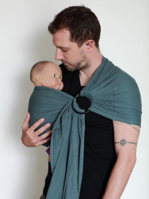

Bienfaits du portage :
Quoi de plus naturel que de porter son bébé ? Après avoir été porté 9 mois, le bébé a besoin de ce contact, les mouvements du corps de sa mère vont lui rappeler les bercements in utéro, les battements de son coeur, son odeur vont sécuriser le bébé.
Le papa en portant peut aussi profiter pleinement de ces merveilleux moments de complicité où bébé peut se blottir et s'endormir contre son père
Le portage permet d'avoir les mains libres.
La maman peut allaiter à l'abri des regards.
Le portage accompagne le développement moteur du bébé et respecte sa position dite "physiologique", facilite la digestion.
Vous pouvez ranger poussette, cosy, nacelle... qui sont lourds et utiliser un système de portage adapté et réglé à votre morphologie.
Déroulement des ateliers :
- accueil
- théorie autour du portage
- pratique
Si vous n'avez pas une écharpe de portage, un sling ou autre porte-bébé, je vous en prête.
Vous pourrez essayer et teste celui qui vous conviendra le mieux avant d'investir.
Tarif :
25€ la séance de 2h
Bons cadeaux à offrir.
Possibilité de paiements échelonnés
Lors des ateliers j'accueille 3 à 5 familles.
